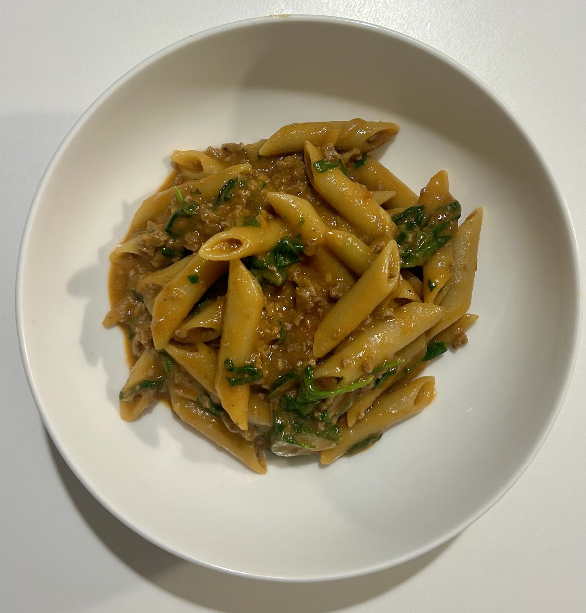

Smoky paprika beef mince, a rich tomato sauce, and rigatoni all cooked together in one pot — no separate boiling, no draining, just one pan to wash up.
A splash of double cream and a handful of wilted spinach at the end round it out into something that tastes like it took a lot more effort than it did.
Good for a weeknight when you want something warm and comforting without the cleanup.

5 servings
35–40 mins • High Protein • Base: 5 servings
Lean beef mince brings a solid hit of protein and iron, tomatoes add lycopene and vitamin C, and spinach folds in extra iron and fibre without changing the flavour.